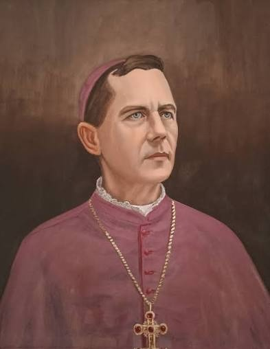
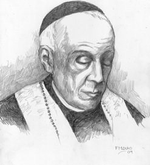
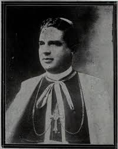
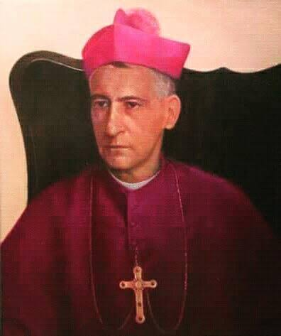
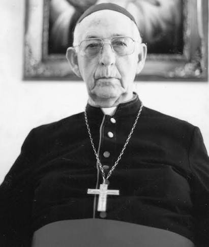
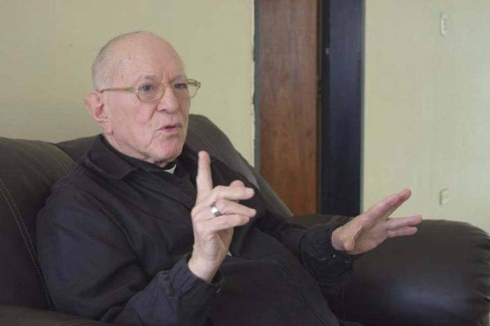
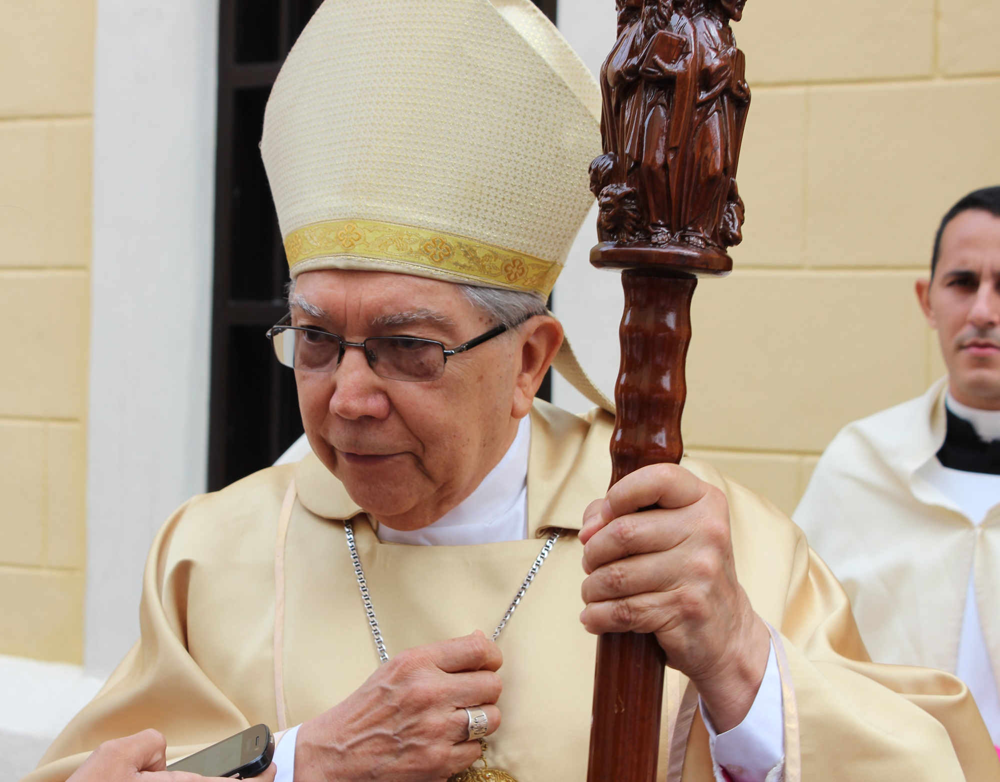

Iglesia Universal
La Iglesia Católica tiene como único centro y cabeza a Jesucristo, el Hijo de Dios. Todo nuestro actuar, organización y misión pastoral nacen del encuentro vivo con Él, buscando hacer presente el Reino de Dios en la sociedad.
Nuestra Arquidiócesis de Maracaibo no es una entidad aislada, sino una porción del Pueblo de Dios integrada plenamente a la Iglesia Católica Universal, unida en comunión de fe, sacramentos y disciplina.
Caminamos en estricta fidelidad y comunión con el Obispo de Roma, el Papa, Sucesor de San Pedro y Vicario de Jesucristo en la tierra. Él es el principio y fundamento perpetuo y visible de la unidad de la Iglesia.
Centralidad en Cristo
Todo nuestro actuar y misión pastoral nacen del encuentro vivo con Jesucristo, buscando hacer presente el Reino de Dios.
Sede Apostólica
Unidos en fe, sacramentos y disciplina con el Sucesor de San Pedro, principio perpetuo de unidad.


Nuestra Historia
Un camino de fe que se ha entrelazado con la historia y el sentir del pueblo zuliano desde finales del siglo XIX.
La historia de la Iglesia en el Zulia está profundamente ligada al dinamismo cultural y geográfico de su región. Durante la época colonial y gran parte del siglo XIX, las tierras zulianas formaban parte de la inmensa Diócesis de Mérida. Sin embargo, el rápido crecimiento poblacional y la importancia comercial y política del Puerto de Maracaibo hacían evidente la necesidad de una sede eclesiástica propia.
Atendiendo a esta realidad, el 28 de julio de 1897, el Papa León XIII erigió canónicamente la Diócesis del Zulia mediante la bula "Supremi Apostolatus Officium". Como primer obispo fue designado **Monseñor Francisco Marvez**, quien tomó posesión a principios de 1898 y comenzó la ardua tarea de organizar administrativamente la nueva circunscripción, erigiendo las primeras parroquias foráneas y organizando el cabildo catedralicio.
A lo largo de las décadas, la Diócesis consolidó su presencia. En 1920, bajo el largo pastoreo de **Monseñor Marcos Sergio Godoy**, se fundaron importantes medios de comunicación católica, como el diario "La Columna" y la emisora "La Voz de la Fe", convirtiendo a la diócesis en una pionera de la evangelización radial en Venezuela. También se promovió activamente la educación con la llegada de congregaciones como los Hermanos Maristas y los Jesuitas. El 2 de enero de 1953, para reflejar mejor su centralidad urbana, pasó a denominarse **Diócesis de Maracaibo**.
El gran hito de consolidación ocurrió el 30 de abril de 1966, cuando el Papa San Pablo VI la elevó al rango de Arquidiócesis Metropolitana. Su primer Arzobispo, **Monseñor Domingo Roa Pérez**, impulsó una de las épocas de mayor florecimiento vocacional, educativo y social en la región, creando decenas de parroquias y fundando escuelas arquidiocesanas para llevar educación de calidad a los sectores más vulnerables. Hoy en día, caminamos con alegría bajo el pastoreo de Mons. José Luis Azuaje, comprometidos con la sinodalidad y la evangelización activa.
Hitos Cronológicos
El Papa León XIII erige la Diócesis del Zulia, independizándola de Mérida, y nombra a Mons. Francisco Marvez.
La diócesis cambia oficialmente su nombre para centrarse en la capital zuliana y su pujanza pastoral.
San Pablo VI eleva la sede a Arquidiócesis Metropolitana, con Mons. Domingo Roa Pérez como primer Arzobispo.
Más de 2.3 millones de fieles, 72 parroquias y un compromiso firme con la sinodalidad y ambientes seguros.

La Chinita
Nuestra Señora del Rosario de Chiquinquirá, corazón espiritual y Patrona indiscutible del Zulia desde 1709.
Conoce el MilagroNuestro Territorio
La Arquidiócesis abarca un vasto territorio que incluye los municipios Maracaibo, San Francisco, Jesús Enrique Lossada, Mara, Almirante Padilla y La Cañada de Urdaneta.
Nuestro pueblo fiel se caracteriza por una profunda devoción mariana, alegría inconfundible y un fuerte apego a sus tradiciones, incluyendo las etnias indígenas Wayúu y Añú.

Sucesión Apostólica
Conozca a los obispos y arzobispos que han guiado los pasos de nuestra Iglesia local a lo largo del tiempo.

Mons. Francisco Marvez
I Obispo del ZuliaPrimer pastor eclesiástico del Zulia. Organizó la administración de la nueva diócesis y sentó las bases institucionales de la Catedral de Maracaibo.

Mons. Arturo C. Álvarez
II Obispo del ZuliaRecordado por su profunda espiritualidad, caridad evangélica y devoción a los necesitados. Su causa de beatificación se encuentra actualmente abierta.

Mons. Marcos Sergio Godoy
III Obispo del ZuliaLideró por 37 años. Fundó el diario "La Columna", la radio "La Voz de la Fe", y coordinó la solemne Coronación Canónica de la Virgen de Chiquinquirá en 1942.

Mons. José R. Pulido M.
IV Obispo del ZuliaDistinguido intelectual y canonista. Consolidó las bases administrativas de la diócesis antes de ser designado Arzobispo coadjutor de Mérida.

Mons. Domingo Roa Pérez
V Obispo y I ArzobispoPrimer Arzobispo metropolitano. Promotor del Concilio Vaticano II en el Zulia, incansable defensor de la educación católica popular y de las vocaciones sacerdotales.

Mons. Ramón Ovidio Pérez
II Arzobispo de MaracaiboReconocido teólogo y comunicador. Gran impulsor del Concilio Plenario de Venezuela, fortaleciendo la comunión eclesial y la formación doctrinal de los laicos.

Mons. Ubaldo Santana S.
III Arzobispo de MaracaiboEstructuró las actuales zonas pastorales, dinamizó la Pastoral Juvenil y presidió la Conferencia Episcopal Venezolana. Actualmente es Arzobispo Emérito.

Mons. José Luis Azuaje
IV Arzobispo de MaracaiboActual pastor de la grey. Impulsa la sinodalidad, la comisión de Ambientes Seguros (CAPAS), la labor caritativa nacional (Cáritas) y la renovación digital.
Ntra. Sra. del Rosario de Chiquinquirá
La venerada imagen de Nuestra Señora del Rosario de Chiquinquirá, cariñosamente llamada "La Chinita", es el corazón espiritual del Zulia y Patrona indiscutible de nuestra Arquidiócesis.
Cuenta la historia que en 1709, en las orillas del Lago de Maracaibo, una humilde mujer encontró una pequeña tabla que llevó a su casa. Días después, el 18 de noviembre, escuchó unos golpes que provenían del cuarto donde había colgado la tabla. Al asomarse, la vivienda se llenó de un gran resplandor: en la madera se había dibujado nítidamente la imagen de la Virgen de Chiquinquirá.
Desde aquel milagro de la renovación, hace más de tres siglos, la Basílica Santuario alberga la Reliquia, siendo centro de peregrinación continua y manifestación del profundo fervor mariano de todo el pueblo zuliano.
Una Iglesia en Salida al Encuentro
Caminamos juntos como una Iglesia sinodal, buscando llegar a todas las periferias y llevando la buena noticia del Evangelio a cada hogar zuliano.